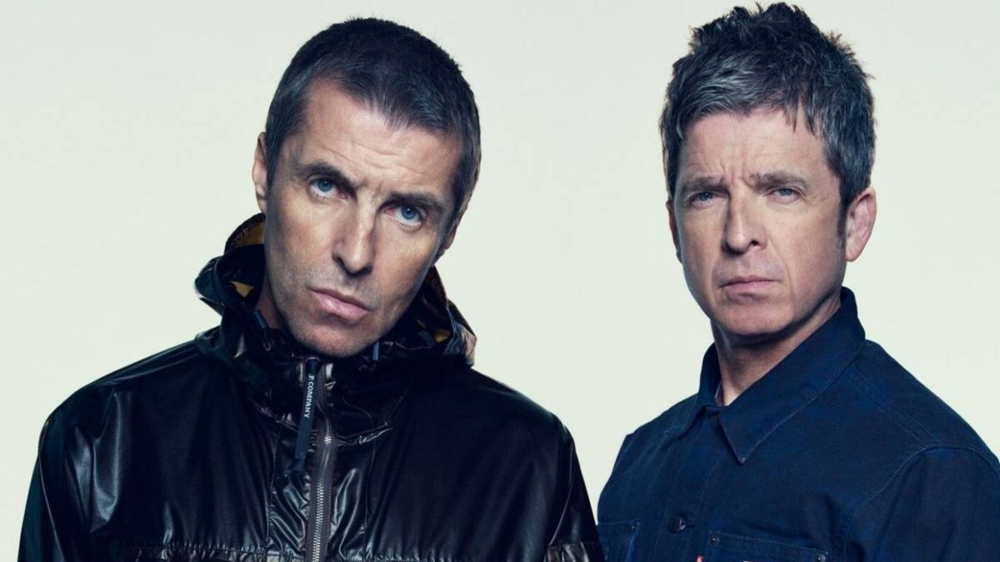
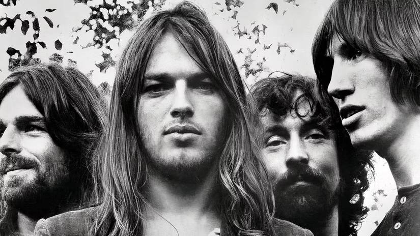
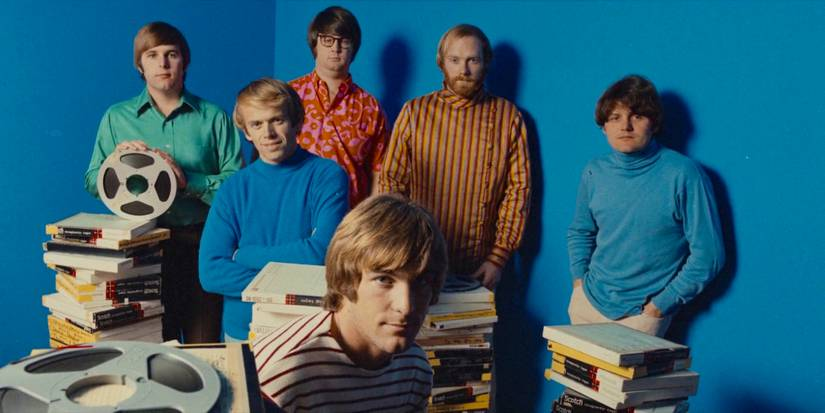
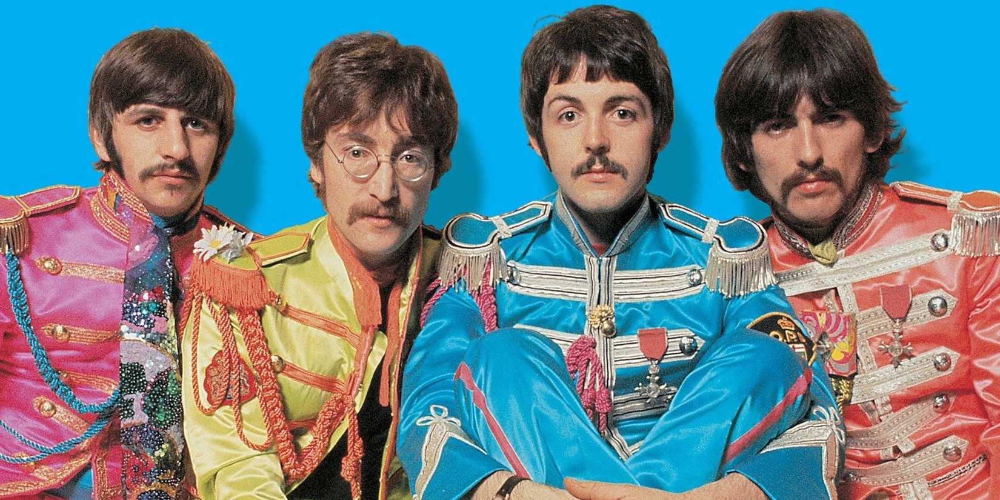

Breakups, Clashes, And Chaos: Rock's Messiest Meltdowns
{kind=link}

When there is a band, likely, there will also be arguments. If we’ve learned anything from rock and popular music over the decades, it’s that the most creative souls amongst us are often also the most emotionally volatile. And when you squeeze a bunch of these volatile souls together into a studio or tour bus, it’s a safe bet that fights and meltdowns will follow.
Unlock Personalized Content &
Exclusive Features For Free
- Engage in discussions in Threads
- Follow and Like top authors, topics, and trends
- Browse with fewer ads across the site
- Personalize your profile to showcase your activity
- Get a content feed tailored to your interests
By creating an account, you agree to our Terms of Use and Privacy Policy. You also agree to receive our newsletters; you can unsubscribe any time.
Log in or Create an Account For Free
Create an account
Please provide your email address to finish creating your account.
*Required: 8 chars, 1 capital letter, 1 number
By creating an account, you agree to our Terms of Use and Privacy Policy. You also agree to receive our newsletters; you can unsubscribe any time.
The tensions that brewed within bands like Pink Floyd are legit rock n’ roll mythology. You cannot think of a band like Oasis without considering the endless, often public arguments between the Gallagher brothers, while the narrative around seminal albums like Fleetwood Mac Rumours is inexorably intertwined with stories of the band’s broken romances.
Band breakups are frequent enough that they’re a dime a dozen. However, certain fallouts are so vitriolic that they rise above your typical meltdown, discussed tirelessly by fans and growing into rock n’ roll folklore. Sometimes it's studio powerplays, often it's substance abuse, and frequently, it's erratic frontmen subjecting their bandmates to psychological torture. These are music’s fieriest fights and biggest blowouts.
Oasis
Earlier this year, iconic ‘90s Britpop act Oasis reunited for a huge worldwide stadium tour that was embraced with ecstatic enthusiasm by fans. The excitement was largely driven by the fact that few expected to ever see brothers Liam and Noel Gallagher performing together again, as the pair basically feuded perpetually and endlessly throughout Oasis’ entire existence.
The duo’s volatile sibling rivalry is the stuff of legends, and the quarrelsome dynamic existed long before Oasis even formed in 1991. The brothers’ creative partnership was riddled with fiery arguments, public spats, and even physical altercations. The band finally unraveled at a Paris festival in 2009, with Noel marking the occasion by smashing up one of Liam’s guitars backstage.
The most notorious incident was dubbed “Wibbling Rivalry,” drawn from an interview recorded by NME Magazine way back in 1994. The profanity-laden exchange saw the brothers discussing a violent argument on an overnight ferry to the Netherlands months prior, which got the band arrested and deported. Liam defended his rock n’ roll behavior, while Noel subsequently threatened to “smash” Liam.
Fleetwood Mac
It’s been pointed out that Fleetwood Mac spent its entire 50-year career teetering on a breakup, though the band will forever be remembered for the personal dramas that inspired Rumours. The '76 album is one of the biggest all-time sellers; though the recording sessions were marked with breakups among the band members, which shaped the album’s lyrics and themes.
Stevie Nicks and Lindsey Buckingham joined Fleetwood Mac as a couple in 1975, though their relationship deteriorated by the time production on Rumours began; their bitter breakup was inflamed by being stuck face-to-face in the studio. Meanwhile, John and Christine McVie finalised their divorce while recording, continuing to work together in less-than-ideal conditions.
Guns N' Roses
An electrifying dynamic defined the original lineup of Guns N' Roses, propelling their debut, Appetite For Destruction, to staggering success. Unfortunately, the dynamic was also defined by its volatility, with Axl Rose sporting a nasty habit of firing his bandmates at regular intervals. Drummer Steven Adler was dismissed in 1990, and guitarist Gilby Clarke several years later.
Things got messy in the decade that followed. Rose alienated the remaining band by acting like a control freak in the studio, not to mention a tendency to arrive hours late to shows, and on occassion, even triggering violent riots in the crowd. Slash revealed in interviews that eventually he could barely even show up because the animosity had grown so crippling.
Slash grew weary of Rose's antics by 1996, departing alongside rhythm guitarist Izzy Stradlin. Axl Rose was officially the only one left standing from the original lineup, and the band famously floundered in the years that followed. Their eternally delayed Chinese Democracy album is the longest-running joke in rock history, barely making a blip when it finally arrived in 2008.
N.W.A.
Another story of musical conflict that’s developed near mythic status. Ice Cube departed the group shortly after their 1988 breakthrough, Straight Outta Compton, aggrieved that he’d been underpaid by frontman Eazy-E and manager Jerry Heller (having written most of the album’s lyrics). The drama inspired Cube’s infamous 1991 diss track “No Vaseline.”
Cube ripped on remaining members in the track, mentioning, Eazy-E, Dr. Dre, MC Ren, and DJ Yella, all by name. “You’re gettin’ fucked real quick, Eazy’s dick is smellin’ like MC Ren’s shit,” rapped Cube. For their part, N.W.A. had called Cube a “traitor” on subsequent releases, eventually splitting and proceeding to share diss tracks amongst each other.
Stone Temple Pilots
A messy example of band tensions that eventually unraveled in tragedy. Prior to vocalist Scott Weiland being dismissed by his bandmates in 2013, tensions had plagued Stone Temple Pilots for years over Weiland's erratic behavior and his long-standing struggles with heroin addiction, which had resulted in multiple arrests, canceled tours, and rehab stints over the decades.
The group had already broken up following a difficult tour in 2002, reforming eventually in 2008, though it was short-lived. Weiland infuriated his bandmates by embarking on a 20th-anniversary tour for their Core album — without the rest of the band — they responded with a single-sentence press release: "Stone Temple Pilots have announced they have officially terminated Scott Weiland.”
The split turned litigious almost immediately. The band sued Weiland, who countersued shortly after. "How do you expel a man from the band that he started, named, sang lead on every song, wrote the lyrics, and was the face of for twenty years?" Tragically, Weiland passed away from a heroin overdose in the back of a tour bus in 2015.
Pink Floyd
{kind=link}

Shortly after founding member Syd Barrett departed the band in 1968 due to spiraling mental health (itself the subject of extensive rock n’ roll lore), Roger Waters stepped up to assume leadership, embarking on a creative hot streak that began with none other than Dark Side of the Moon, a masterpiece that became the best-selling album of all time.
However, interpersonal tensions among the members brewed for years, evidenced by Waters’ final release with the band, The Final Cut, credited exclusively to him and only “performed by Pink Floyd.” David Gilmour wasn’t exactly thrilled with serving as the band’s backing guitarist. Waters quit not long after, sparking a bitter (and often litigious) feud that lasted decades.
Waters went solo to limited success, while Pink Floyd staggered on under the leadership of Gilmour (much to the chagrin of Waters, who launched a lawsuit in 1986). Waters and Gilmour traded barbs in the press for years, which continues even to this day due to Waters’ outspoken political beliefs. Pink Floyd ruminated on the conflict in 1994’s The Division Bell.
The Beach Boys
{kind=link}

The Beach Boys are responsible for some of the most divine pop harmonies to ever be pressed to vinyl, though the dynamic among its members was far from harmonic. Primarily, conflict brewed between Brian Wilson, the band’s primary songwriter, and Mike Love, vocalist and frontman. The pair clashed over musical direction, particularly as Wilson pressed for musical innovation.
Things grew tense as the ‘60s pushed on. Wilson withdrew from touring after suffering a nervous breakdown during a flight, and tensions flared around the band’s seminal Pet Sounds album. Initially received tepidly by fans (later embraced as a masterpiece), Love was less than impressed with Wilson diverting from the band’s surf-pop sound, calling the album “Brian’s ego trip.”
Wilson spiraled into heavy LSD use, and the recording of follow-up album Smile collapsed in 1967. Wilson’s schizophrenia saw him withdraw nearly completely from the band throughout the '70s (without ever officially quitting). Sporadic returns from Wilson over the decades were marred by lawsuits from Love, and tragically, co-founder Dennis Wilson died of drowning in 1983.
The Beatles
{kind=link}

Many believe The Beatles to be the greatest band ever to exist, while simultaneously expressing deep regret that these four incredible personalities strained under the weight of their own talent, unable to hold the band together. Bitter disappointment persists among fans to this day over the breakup — witness the ongoing mythology around how “Yoko Ono broke up The Beatles.”
In truth, deeper, long-standing issues had brewed within the band for years. Paul McCartney’s creative dominance alienated his bandmates; John Lennon yearned for artistic freedom; George Harrison grew frustrated with his limited creative output; and Ringo Starr, feeling undervalued, had already briefly departed in 1968, prior to the band splitting for good in 1970.
The Pixies
One of the most beloved cult rock acts ever, and a deep influence on the grunge-rock explosion of the ‘90s, The Pixies toiled under the leadership of songwriter Black Francis following their formation in 1986. This was all well and good until bassist Kim Deal developed her own songwriting aspirations (co-writing one of The Pixies’ biggest hits, “Gigantic,” in 1988).
Feeling sidelined by their dictatorial frontman, Deal launched her side project, The Breeders, to a warm response from fans. Francis reportedly felt irked, viewing Deal’s new band as a distraction. Tensions flared, boiling over when Francis threw his guitar at Deal during a performance at Reading Festival in 1991. Shortly thereafter, he disbanded the group via fax machine.
Talking Heads
Yet another infamous example of a beloved band’s relationships slowly decaying (again, under the leadership of an erratic frontman). Talking Heads’ 1983 album Speaking In Tongues was the last they toured together as a band, and the subsequent years leading up to the band’s 1991 breakup were tumultuous, straining under the controlling behavior of David Byrne.
Byrne assumed control over every aspect of the band, and meanwhile, his intense stage presence contrasted strongly with his offstage isolation. He rarely socialized with the band outside of shows, making communication increasingly strained. Byrne later expressed regret over what transpired: “As a younger person, I was not as pleasant to be around.”